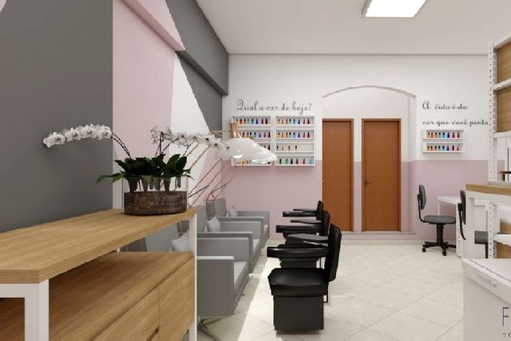
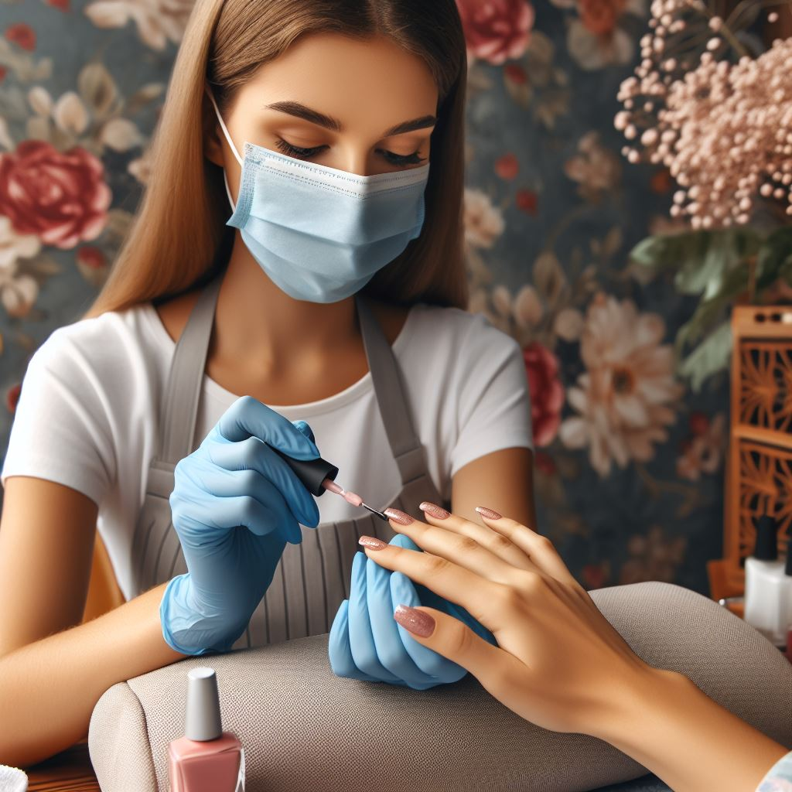

DM Esmalteria
Bem-vinda à DM Esmalteria, onde cuidar das suas unhas é mais que um serviço, é um momento especial. Oferecemos uma experiência única de beleza e bem-estar, com uma ampla variedade de cores e tratamentos para realçar ainda mais a sua personalidade. Nossa equipe de profissionais está pronta para proporcionar um atendimento personalizado e de alta qualidade, garantindo que você saia daqui com unhas impecáveis e um sorriso no rosto. Seja para um cuidado básico ou algo mais sofisticado, na DM Esmalteria você sempre encontra o que precisa para se sentir ainda mais linda!
Esse é o nosso espaço

O espaço da DM Esmalteria foi cuidadosamente planejado para oferecer um ambiente acolhedor e sofisticado, onde você pode relaxar enquanto cuida de suas unhas. Com uma decoração moderna e clean, nosso salão conta com poltronas confortáveis, iluminação suave e um ambiente tranquilo, ideal para proporcionar momentos de bem-estar. Cada detalhe foi pensado para garantir que você tenha uma experiência agradável e relaxante, desde a organização dos materiais até a higienização dos espaços. Aqui, você se sente em casa enquanto recebe os melhores cuidados.
Nossas funcionarias

Clara Monteiro
"A Especialista em Nail Art Minimalista"
claramonteiro
Clara é conhecida por sua abordagem sofisticada e elegante no design de unhas. Suas clientes adoram o toque minimalista que ela traz, com traços delicados, cores neutras e detalhes sutis que dão um ar moderno e refinado. Seu trabalho inclui desde linhas finas e geométricas até pequenos pontos de luz com pedras e glitter, sempre mantendo a elegância como marca registrada. Clara é perfeita para quem busca unhas discretas, mas cheias de estilo.

Luana Silva
"A Rainha das Unhas Decoradas"
luanasilva
Luana é famosa por suas criações ousadas e detalhadas. Se uma cliente busca algo mais chamativo, Luana é a escolha certa. Ela é uma verdadeira artista quando se trata de unhas decoradas, utilizando técnicas como encapsulamento, aquarela, adesivos 3D e muitos brilhos. Com ela, cada unha se transforma em uma pequena obra de arte, sendo ideal para quem gosta de destacar as mãos com cores vibrantes e decorações criativas.
Sabrina Oliveira
"A Mestre das Unhas Naturais e Saudáveis"
sabrinaoliveira
Sabrina tem uma abordagem centrada no cuidado das unhas naturais, priorizando sempre a saúde das mãos de suas clientes. Ela é expert em esmaltação em gel e tratamentos fortalecedores, além de ser especializada em manicure sem corte e técnicas que preservam a estrutura das unhas. Sabrina também é conhecida por suas massagens relaxantes e finalização impecável com esmaltes em tons clássicos e duradouros. Suas clientes a procuram por um cuidado especial e uma aparência natural e sofisticada.
A DM Esmalteria nasceu com o propósito de oferecer uma experiência completa de beleza e bem-estar, focada em cuidados especializados para as unhas. Nossa missão é garantir que cada cliente se sinta acolhida em um ambiente moderno e relaxante, onde a saúde das unhas é priorizada e a beleza ganha destaque. Aqui, acreditamos que o cuidado com as unhas é mais do que estética: é uma forma de elevar a autoestima e proporcionar momentos de autocuidado.
Nossa história
A DM Esmalteria foi fundada em 2018, quando duas amigas, apaixonadas pelo mundo da beleza e dos cuidados pessoais, decidiram unir forças e transformar um sonho em realidade. Com experiência na área e uma visão inovadora, elas criaram um espaço que combinasse qualidade, conforto e excelência no atendimento. Desde o primeiro dia, nosso objetivo sempre foi oferecer serviços diferenciados, usando produtos de alta qualidade e técnicas modernas para garantir resultados impecáveis. O sucesso foi imediato, e hoje, a DM Esmalteria é referência na região, sempre trazendo as últimas tendências do mercado.
Nossos Serviços
Na DM Esmalteria, você encontra uma ampla gama de serviços, desde os mais tradicionais até os mais sofisticados. Oferecemos manicure e pedicure, alongamento de unhas, nail art personalizada, blindagem das unhas e até esmaltação infantil, tudo feito com o maior cuidado e atenção aos detalhes. Nossos profissionais são altamente capacitados e estão sempre atualizados com as novidades do setor, garantindo que suas unhas recebam o tratamento que merecem.
Nosso Espaço
Além de serviços de alta qualidade, nosso espaço foi projetado para que cada visita seja uma verdadeira experiência de relaxamento. A DM Esmalteria conta com um ambiente acolhedor, poltronas confortáveis, uma decoração clean e elegante, tudo pensado para que você possa relaxar enquanto cuida de si mesma. Prezamos pela higiene e pelo bem-estar, assegurando que você se sinta confortável e segura durante todo o processo.
Nosso Compromisso
Desde o início, nosso compromisso com a qualidade e o atendimento personalizado é o que nos diferencia. Valorizamos cada cliente, oferecendo um atendimento humanizado e resultados de excelência. Venha conhecer a DM Esmalteria e descubra um novo jeito de cuidar das suas unhas!